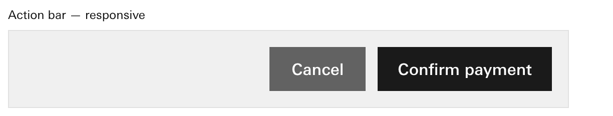

Question 3 · where a part's words come from
Where does a part's own text come from: a field on the part, or a separate text part placed inside it?
Recommend: a field on the part, such as the button's label and the header's title. Because the words are checked with the part: the label's length, its wrap, the 44px target and the name a screen reader hears.
45 parts describe how they look but not what they say. The button, the header, the status dot, the list and the summary have no field for their words. In the snippet the words are simply typed into the markup.

The button's reference snippet. "Example" is typed into the markup; no field on the part names it. 
The same snippet's action bar. "Confirm payment" is the kind of word a live screen must supply. Recommended · a field on the partThe button carries its label
{ "id": "pay", "component": "button", "variant": "primary", "label": "Confirm payment" }Apollo's gate sees the words as the button's own and can check them with it. Each of the 45 parts gains one or two plainly named fields: label, title, items, rows, trail.
Or · a text part insideThe button holds a separate text part
{ "id": "pay", "component": "button", "variant": "primary", "child": "pay-text" } { "id": "pay-text", "component": "Text", "text": "Confirm payment" }This is how A2UI's own basic button works, so it costs nothing to write. But the words become a loose child the gate cannot tell apart from any other text.